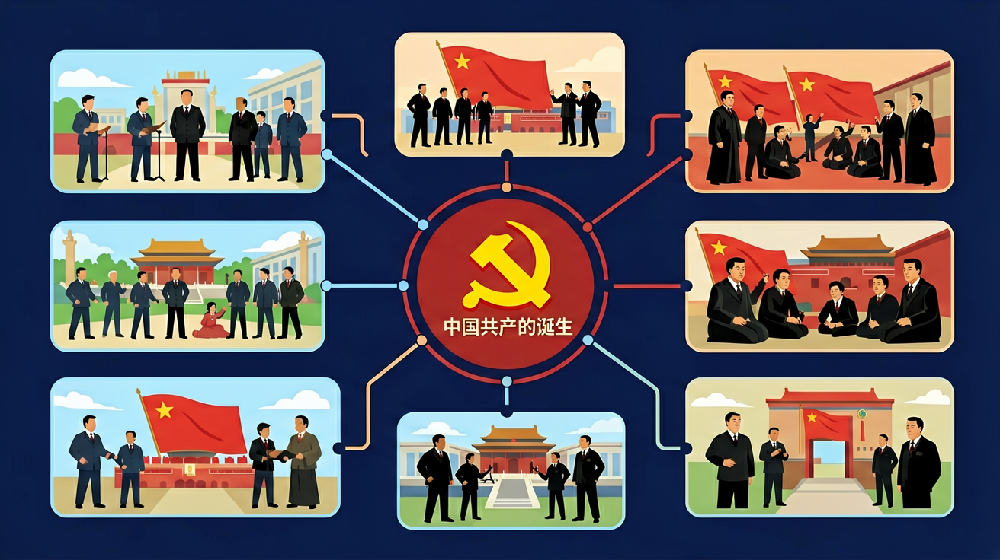

通过了解明末李自成起义，清中叶以来的政治腐败、故步自封和19世纪的国际局势，认识当时中国社会面临的严重危机。

🎯 能说出中国共产党诞生的时间和地点
🎯 能分析中国共产党诞生的历史背景
🎯 能判断中国共产党诞生的历史意义
❓ 为什么当时中国需要共产党？
❓ 共产党成立时有多少人？现在呢？
❓ 共产党的诞生和我们现在的生活有啥关系？
学完这一课，这些问题你都能自信地回答。
中国共产党成立于哪一年？
中共一大最后一天会议在哪里举行？
中国共产党的诞生是初中历史的重要内容。通过了解明末李自成起义，清中叶以来的政治腐败、故步自封和19世纪的国际局势，认识当时中国社会面临的严重危机。
了解中国历史上的英雄人物，崇尚英雄气概，传承民族气节；培育和践行社会主义核心价值观，把握习近平新时代中国特色社会主义思想的核心要义，树立中国特色社会主义道路自信、理论自信、制度自信、文化自信。
点击时代/图层按钮切换地图；悬停边界，点击城市标记查看说明。
把卡片拖到核心概念 / 方法技能 / 应用情境 / 常见误区。
拖完 4 项后自动判分。
五四运动后马克思主义广泛传播，工人阶级登上政治舞台。1921年中共一大召开，中国共产党成立，中国革命面貌从此焕然一新。它是近代中国社会进步和革命发展的客观要求。
写清马克思主义传播、工人运动、早期组织到一大召开。点明“开天辟地”的意义。
常见误区：常见误区是把五四与建党混为一谈，或说不清为何说革命面貌焕然一新。
中国共产党成立于？
And：学生知道近代中国被列强欺负
But：不明白为啥救国必须靠共产党
Therefore：讲清历史选择的必然性
1921年共产党成立前，中国试过很多救国路都失败了。比如辛亥革命推翻清朝，但袁世凯窃取果实，军阀混战让百姓更苦。当时500多个政治团体，只有共产党把工人农民组织起来。就像生病乱吃药没用，必须找到病根——共产党发现帝国主义和封建主义才是祸首。
🌍 就像班级总被隔壁班欺负，有人提议送礼讨好，有人想单挑，班长却组织大家练体能、记对方违纪证据。共产党就是这样的'班长'。
以下哪项是共产党诞生的根本原因？
And：知道中共一大在上海召开
But：不理解转移到南湖的意义
Therefore：体会建党艰辛与智慧
1921年7月30日晚，中共一大在上海被特务发现，13位代表紧急转移。李达夫人王会悟提议到嘉兴南湖，租了条8米长的画舫继续开会。这条船现在叫'红船'，当时会议预算只有200银元，连茶水钱都要省。代表们用麻将牌打掩护，把《中国共产党纲领》藏在点心盒里。
🌍 就像你们小组讨论被捣乱，马上转移到空教室继续，还把重要笔记藏在文具盒。这种随机应变就是革命智慧。
中共一大最后一天会议在哪里完成？
将事件分解为时间、地点、人物、原因、过程、结果六个要素
理解五四运动与共产党诞生的因果关系
对比共产党成立时与现在的党员人数和组织规模
通过历史照片观察中共一大会址场景
思考共产党诞生对当代中国发展的影响
复制提示词到 AI 学伴，生成「中国共产党的诞生」的时间轴或事件提纲；也可以上传你手绘的示意图，请 AI 学伴点评。
复制后可粘贴到 AI 学伴继续对话。
关于中国共产党诞生的历史条件，正确的是
分析中共一大13位代表的年龄、职业和教育背景
关于中国共产党的诞生的学习，哪种做法最科学？
选一个并查看反馈。
先独立作答，再点选项查看对错与错因。
中共一大最后一天转移到嘉兴南湖的主要原因是
下列哪项最能体现中共一大代表的社会背景特点
中共一大通过的第一个纲领中，最核心的内容是
中共一大召开时，全国共有党员____人
答案：50多
1921年7月时党员人数约53人
标志着中国工人阶级开始登上政治舞台的历史事件是____
答案：五四运动
1919年五四运动中工人阶级成为主力军
✅ 最初只有50多名党员，经过长期发展才壮大
💡 将现状投射到历史起点
✅ 五四运动是1919年，共产党成立于1921年
💡 时间顺序记忆混淆
口诀：一九二一七月间，上海南湖红船现
类比：就像种子发芽需要合适的土壤和气候，共产党的诞生也需要特定的历史条件
（升学题）以下哪项不是中国共产党诞生的历史条件？
（迁移题）如果当时没有共产党，中国可能会怎样？
中共一大代表平均年龄约多少岁？
点击节点跳转到对应章节；可切换布局。